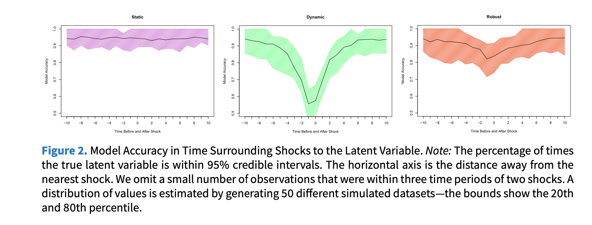

The Core Problem
Political scientists increasingly use latent variable models to measure unobservable concepts—ideology, democracy, human rights, transparency.
When applied to time-series cross-sectional (TSCS) data, researchers face a fundamental tradeoff:
Static models
- Minimize bias
- Allow rapid change
- ❌ Ignore temporal structure
- ❌ Lose efficiency
Dynamic models
- Model temporal dependence
- Leverage time-series information
- ❌ Over-smooth rapid changes
- ❌ Bias when shocks occur
Goal: A model that handles both stability and sudden change.
Static Models
The simplest approach: treat every unit-period as independent.
\[\theta_{it} \sim \mathrm{N}(0, 1) \quad \forall i = 1,\ldots,N \;\; \& \;\; \forall t = 1,\ldots,T\]
How it works
- Estimates for each unit-period depend only on observed manifest variables at that time point
- Allows sudden changes in the latent trait between periods
Limitations
- Treats observations as independent → violates temporal structure
- Social science indicators are often coarse or missing
- Results in wide, uninformative credible intervals when data are sparse
Dynamic Models
The standard solution: model the latent trait as a random walk.
\[\theta_{i1} \sim \mathrm{N}(0,1), \qquad \theta_{it} \sim \mathrm{N}(\theta_{i(t-1)},\, \sigma), \qquad \sigma \sim \mathrm{HN}(0,3)\]
Benefits
- Incorporates temporal autocorrelation as prior information
- Produces tighter (more efficient) credible intervals
- Theoretically sensible when traits are slow-moving
Critical limitation
- Smoothing induces bias near shocks
- Rapid institutional collapse, elections, coups appear as gradual transitions
- Dynamic model performs poorly in the periods surrounding a sudden change
The Robust Dynamic Model
Key insight: Replace the Normal transition prior with a Student’s t distribution.
\[\theta_{i1} \sim \mathrm{N}(0,1), \qquad \theta_{it} \sim \mathrm{T}_4(\theta_{i(t-1)},\, \sigma), \qquad \sigma \sim \mathrm{HN}(0,3)\]
The Student’s t with 4 degrees of freedom has heavier tails than the Normal:
- During stability → behaves like the dynamic model (efficient, smooth)
- During shocks → the heavy tails permit large jumps without over-smoothing
The model retains temporal structure while accommodating extreme values (“outliers” = shocks).
This is equivalent to the standard dynamic model in the absence of volatility, and outperforms it when volatility is present.
Simulation Design
To compare all three models under known data-generating conditions:
- Latent trait \(\theta_{i1}\) drawn from \(\mathrm{N}(0,1)\)
- Trait follows a random walk thereafter
- With probability p, a unit experiences a shock — \(\theta_{it}\) re-drawn from \(\mathrm{N}(0,1)\)
- Binary manifest indicators generated with error from the true latent trait
Models evaluated on:
- 95% credible interval coverage around shocks
- Within-unit rank correlations
- Cross-validated accuracy
- Differences between adjacent time periods
Benchmark parameters: shock probability = 0.01, innovation SD = 0.05.
Simulation Results
For a stable unit (no shock):
- Static: wide, wandering intervals — inefficient
- Dynamic & Robust: tight, well-centred intervals — equally good
For a unit experiencing a shock (period 15):
- Static: captures the true value but with very wide intervals
- Dynamic: over-smooths the jump; misses the true value for several periods
- Robust: tight intervals that rapidly adapt to the new level
Key finding: The robust model is never worse than the dynamic model, and is substantially better when shocks occur.

Application 1 — Judicial Ideology
Data: US Supreme Court votes, 1937–2015 (Martin & Quinn 2002)
- Items = individual justice votes (affirm/overturn)
- Original model used a dynamic prior
Posterior predictive accuracy
| Model | Correct Predictions |
|---|---|
| Dynamic | 72.77% |
| Robust | 72.95% |
WAIC (lower = better fit)
| Model | WAIC |
|---|---|
| Dynamic | 46,852 |
| Robust | 46,647 (Δ = 205, SE = 15.6) |
Substantive finding: The robust model detects a sudden shift in Rehnquist’s voting in 1987— his first year as Chief Justice—consistent with strategic incentive changes. The dynamic model smooths this over and misses it entirely.
Application 2 — Democracy
Data: Country-year democracy estimates, 1950–2008 (Pemstein, Meserve & Melton 2010)
- 10 ordinal indicators (Polity, Freedom House, Polyarchy, Bollen, Vanhanen, …)
- Original model used a static prior
WAIC comparison
| Model | WAIC |
|---|---|
| Static | 93,267 |
| Dynamic | 79,237 |
| Robust | 65,082 |
Substantive findings
- Philippines: Robust model clearly identifies the 1972 imposition of martial law under Marcos and the subsequent recovery after 1981 and 1987 — the dynamic model anticipates these changes too early and underestimates the abruptness.
- Afghanistan: Only the robust model captures the short-lived Saur Revolution in 1978 (quickly followed by the Soviet invasion in 1979) — invisible in the dynamic and static models.
Discussion & Takeaways
The robust dynamic model is a better default when:
- The latent trait is subject to punctuated equilibria or sudden regime change
- Researchers want efficiency and the ability to detect rapid shifts
- The phenomenon of interest includes institutional collapse, coups, or electoral shocks
Practical recommendations
- Estimate both dynamic and robust models; compare with WAIC and posterior predictive checks
- Visually inspect well-known historical cases as a validity check
- Estimate \(\sigma^2\) directly from data when possible; sensitivity-test fixed values
- Be cautious when \(\sigma^2 \to 0\): the robust model may artificially detect shocks
Limitations & future work
- Change-point models, mixture models, and continuous-time latent variable models are complementary alternatives worth exploring
- Causal explanation of detected shocks remains outside the scope of measurement models
Summary
| Feature | Static | Dynamic | Robust |
|---|---|---|---|
| Models temporal structure | ❌ | ✅ | ✅ |
| Efficient (tight intervals) | ❌ | ✅ | ✅ |
| Handles sudden shocks | ✅ | ❌ | ✅ |
| Unbiased near shocks | ✅ | ❌ | ✅ |
| Fit (WAIC — democracy) | worst | middle | best |
Replacing the Normal transition prior with a Student’s t(4) distribution is a simple, theoretically motivated change that substantially improves latent variable estimates for politically volatile phenomena— at no cost when the world is stable.
Replication code & data: https://doi.org/10.7910/DVN/SSLCFF